1 Introduction
The classical Schur number S(k) is the largest N such that \{1,\ldots,N\} can be split into k groups, each containing no solution to x + y = z with x, y, z in the same group. Think of it as a coloring game: color the integers 1 through N with k colors, and call each color’s class the set of integers that receive that color (so the k classes are exactly the k groups above). The coloring wins when no class contains two numbers that add up to a third number of that same class (Figure 1). Values are known only through S(5) = 160 [Heu17]; S(6) is unknown, and the growth rate of S(k) is Erdős problem 483. Generalizations to longer equations (x_1 + \cdots + x_\ell = y) were studied by Beutelspacher and Brestovansky [BB82] and are now textbook material [LR14].
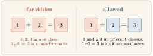
Why study such numbers? Schur’s theorem, that every finite coloring of the positive integers leaves some color class with a solution of x + y = z, is a founding result of Ramsey theory; Schur proved it in 1916 as a step toward Fermat’s Last Theorem modulo a prime, showing that x^n + y^n \equiv z^n \pmod p has a nonzero solution for all sufficiently large p [LR14]. The relation x + y = z is the simplest partition-regular equation, the prototype for Rado’s theory of which linear systems force a monochromatic solution, and S(k) records the exact threshold at which that force takes hold. The numbers are notoriously hard to compute, the value S(5) = 160 above being both the current frontier and a landmark of computer-generated proof [Heu17]. The modular variant studied here keeps the same coloring game but turns each color class into an \ell-sum-free set in the cyclic group \mathbb{Z}/m; this brings additive combinatorics to bear, for instance the Cauchy–Davenport inequality of Section 5, and, as the results below show, makes exact closed forms attainable where the classical numbers resist them.
Chappelon, Revuelta Marchena, and Sanz Domínguez [CMD13] introduced a modular twist: instead of requiring x_1 + \cdots + x_\ell = y exactly, they only forbid x_1 + \cdots + x_\ell \equiv y \pmod{m}. This is the modular Schur number S_m(k, \ell).
Definition 1.1. A set S \subseteq \mathbb{Z} is \ell-sum-free modulo m if no x_1, \ldots, x_\ell \in S (repetitions allowed) and y \in S satisfy x_1 + \cdots + x_\ell \equiv y \pmod m. The modular Schur number S_m(k,\ell) is the greatest N \geq 0 such that [1,N] admits a k-partition into \ell-sum-free sets modulo m.
In other words: S_m(k,\ell) is the largest list of positive integers that can be colored with k colors so that no color class contains the forbidden modular equation. Figure 2 contrasts the two notions side by side.
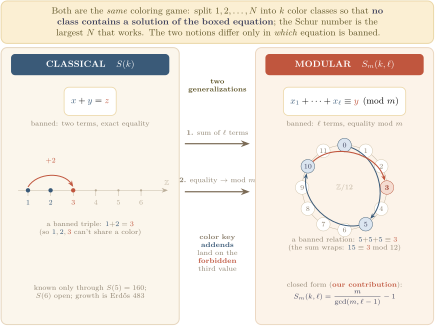
Chappelon et al. [CMD13] settled the small cases m \in \{1,2,3\} and noted that the determination of S_m(k,\ell) “seems to be much more difficult for moduli m \geq 4” [CMD13, §6]. D’orville, Sim, Wong, and Ho [DSWH25] subsequently settled m \in \{4,5,6,7\} by working through every possible value of \ell \bmod m case by case, leaving m \geq 8 as Problem 1, part 5 of their open problems. Looking across all ten of their tables, a pattern emerges: once k is large enough, S_m(k,\ell) depends only on \gcd(m,\ell-1), not on the full details of m and \ell separately. That pattern was not written down as a single unified statement.
Writing d := \gcd(m, \ell-1) (the greatest common divisor of m and \ell-1) and n := m/d, the following theorem makes that pattern explicit, with no hypothesis on m and no case split on \ell \bmod m.
Theorem 1.2. For every m \geq 2, \ell \geq 2, and k \geq n - 1, S_m(k, \ell) = n - 1 = \frac{m}{\gcd(m, \ell - 1)} - 1.
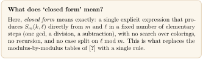
In other words: when you have enough color classes (at least n - 1 of them), the longest colorable list has exactly n - 1 entries, where n is m divided by \gcd(m, \ell - 1) (Figure 3).
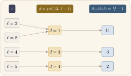
The proof is elementary: both bounds reduce to the observation that n itself is a singleton that fails \ell-sum-freeness. We give it in the next two sections. Theorem 1.2 settles the stable-k regime (k \geq n-1) of [DSWH25, Problem 1, part 5] for all m \geq 2.
The formula follows from [DSWH25, Theorem 4 + Corollary 3] by choosing the optimal singleton: the smallest a \in [1, m-1] for which Corollary 3’s hypothesis \ell \equiv 1 \pmod{m/\gcd(a,m)} holds is a = n, giving the upper bound S_m(k,\ell) < n. [DSWH25] used Corollary 3 only through Corollary 5 (the coprime case \gcd(m,\ell-1)=1, where the hypothesis holds for no a \leq m-1); they did not record the optimization for general \gcd. The principal new content of the present note is the threshold k_0 analysis in Section 5: a cyclic-group iterated-sumset saturation lemma (Theorem 5.3), a sharp k_0 for prime moduli, and the explicit witness \{1,5\} \subseteq \mathbb{Z}/12 showing the prime case does not generalize naively. The note also resolves their Problem 1, part 3 in closed form (the single-class case, Section 6) and develops structural machinery toward the composite-modulus threshold (Section 8).
Theorem 1.2, the k = 1 case (Theorem 6.1), and the structural reductions of Section 8 are all formalized in Lean 4; the core closed-form proof was produced with the Aristotle automated theorem prover [ABB+25]. The full Lean development, with the precise statements and a guide to the modules, is at https://github.com/mysticflounder/modular-schur.
1.1 Organization
The paper is organized as follows. Section 2 collects four short lemmas that the proofs of the main theorem will use. Section 3 proves the upper bound S_m(k,\ell) \leq n - 1, the heart of the argument. Section 4 proves the matching lower bound, showing the upper bound is always achieved. Section 5 asks a finer question: how large must k be before the formula kicks in? It records a tight answer for prime moduli and a counterexample showing composite moduli behave differently. Section 6 handles the single-class case k = 1 in a separate closed form. Section 7 spells out the formula for several specific moduli. Section 8 records the structural machinery developed toward the composite-modulus threshold: the K+\tau schema, the Coordinate-Union Edge Rule, and the separated-fiber and anchored exact transversal (AET) criteria, together with the computational frontier. Section 9 states what remains open.
2 Preliminaries
Throughout, m \geq 2 and \ell \geq 2 are fixed integers. Set d := \gcd(m, \ell-1), \qquad n := m/d. Then dn = m exactly, and d \mid (\ell - 1) by definition. The number n is the key quantity: the main theorem says the answer is n - 1.
This section records four lemmas that the proofs in later sections will call on. Three of them are quick sanity checks (working modulo m is harmless; the list can never exceed m - 1; adding empty classes is free). The fourth, the singleton safety criterion, is the engine of the whole paper.
Lemma 2.1 (Residue reduction). Let N \leq m - 1. Then the integers 1, 2, \ldots, N have pairwise distinct nonzero residues modulo m. Moreover, a k-partition [1,N] = C_1 \sqcup \cdots \sqcup C_k \subseteq \mathbb{Z} is valid, meaning each C_i is \ell-sum-free modulo m in the sense of Definition 1.1, if and only if the corresponding partition of the residues, \{1, \ldots, N\} = \bar C_1 \sqcup \cdots \sqcup \bar C_k \subseteq \mathbb{Z}/m, has each \bar C_i \ell-sum-free. Consequently S_m(k,\ell), defined on the integers in Definition 1.1, equals its residue-level counterpart.
In other words: when N < m, the integers 1, \ldots, N are all distinct modulo m, so thinking of them as residues loses no information. A coloring is valid on the integers exactly when it is valid on the residues.
Proof. All elements of [1,N] lie in [1,
m-1], and the reduction [1, m-1]
\hookrightarrow \mathbb{Z}/m is injective: if a \equiv b \pmod m with 1 \leq a, b \leq m-1, then |a-b| < m forces a = b. Under this injection each class C_i corresponds bijectively to a subset \bar C_i \subseteq \{1, \ldots, m-1\} of
\mathbb{Z}/m. For any tuple (x_1, \ldots, x_\ell; y) \in C_i^\ell \times
C_i, the integer congruence x_1 +
\cdots + x_\ell \equiv y \pmod m holds if and only if \bar x_1 + \cdots + \bar x_\ell = \bar y in
\mathbb{Z}/m, and every \ell-tuple in \bar
C_i lifts uniquely to C_i. So
\ell-sum-freeness transfers in both
directions, and the two definitions of S_m(k,\ell) agree. (This equivalence is
formalized as
schurMod_eq_schurModResidue.)□
Lemma 2.2 (Universal upper bound, [CMD13]). For every \ell \geq 1 and every k \geq 1, S_m(k,\ell) \leq m - 1.
In other words: the element m is always self-defeating, so no valid coloring can include it. The list can never reach length m.
Proof. If N
\geq m, then m \in [1,N] lies in
some class C. The tuple (m, \ldots, m; m) \in C^{\ell+1} satisfies
\ell m \equiv 0 \equiv m \pmod m,
violating \ell-sum-freeness. (This is
[CMD13, Eq. (2)]; formalized as
no_valid_partition_of_ge_m, and together with Lemma 2.1 justifies the N \leq m-1 search cap used in the Lean
definition via
schurMod_is_greatest.)□
Lemma 2.3 (Singleton safety). For r \in \{1, \ldots, m-1\}, the singleton \{r\} \subseteq \mathbb{Z}/m is \ell-sum-free modulo m if and only if (\ell - 1)r \not\equiv 0 \pmod m; equivalently, if and only if n \nmid r.
In other words: a single element r placed alone in a class is safe precisely when adding r to itself \ell times does not wrap around to r modulo m. The smallest unsafe singleton turns out to be exactly r = n.
This is [DSWH25, Theorem 4] rewritten in the variables natural for our application; we include the derivation for self-containment.
Proof. The singleton \{r\} fails to be \ell-sum-free exactly when \ell\{r\} \cap \{r\} \neq \emptyset, that is, when \ell r \equiv r \pmod m, equivalently (\ell-1)r \equiv 0 \pmod m. Write \ell - 1 = du, so that \gcd(u, n) = 1. Since m = dn, (\ell-1)r \equiv 0 \pmod{m} \;\iff\; ur \equiv 0 \pmod n \;\iff\; n \mid r. So \{r\} is \ell-sum-free if and only if (\ell-1)r \not\equiv 0 \pmod m, if and only if n \nmid r.□
Lemma 2.4 (Monotonicity in k). If [1,N] admits a valid k_0-partition, then for every k \geq k_0 it admits a valid k-partition.
In other words: more color classes can never hurt. If k_0 colors work, any larger number of colors works too.
Proof. Pad with k - k_0 empty classes; the empty set is vacuously \ell-sum-free.□
3 Upper bound
The entire upper bound rests on a single self-defeating number. Recall d = \gcd(m, \ell-1) and n = m/d, so dn = m. The value n is exactly the smallest positive integer r for which (\ell-1)\,r is a multiple of m, since m \mid (\ell-1)r if and only if n \mid r (Lemma 2.3). Saying “(\ell-1)\,n is a multiple of m” is the same as \ell\,n \equiv n \pmod{m}, that is, adding n to itself \ell times returns to n modulo m (Figure 4). So n is unsafe even as a singleton, and no \ell-sum-free class can contain it.
Theorem 3.1. For all m \geq 2, \ell \geq 2, and k \geq 1, S_m(k,\ell) \leq n - 1.
In other words: once the list grows to include n, it can no longer be partitioned into \ell-sum-free classes, no matter how many classes are allowed.
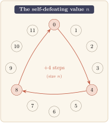
Proof. Suppose N \geq n. Since 1 \leq n \leq m, we have n \in [1, N]; let C be the class of a valid k-partition containing n. Write \ell - 1 = du with u \in \mathbb{Z}, so (\ell - 1) \cdot n = du \cdot n = u \cdot (dn) = u \cdot m \equiv 0 \pmod m. Hence \ell n \equiv n \pmod m. The tuple (n, \ldots, n; n) \in C^{\ell+1} thus witnesses \ell-sum-freeness failure in C, a contradiction.□
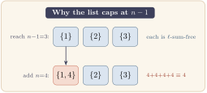
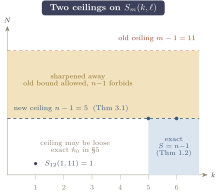
How to read this bound: is it the exact answer? Theorem 3.1 is a ceiling, and three points are worth separating.
- It sharpens the older ceiling. The previously known general bound was S_m(k,\ell) \leq m-1 (Lemma 2.2). Since n = m/d \leq m, the new ceiling n-1 is never worse, and is strictly lower whenever d = \gcd(m,\ell-1) > 1.
- The ceiling is hit exactly when there are enough classes. If k \geq n-1, placing each of 1, 2, \ldots, n-1 in its own one-element class makes every singleton \{r\} with r < n \ell-sum-free (the self-defeating identity needs the value n, and r \neq n). This reaches N = n-1, so the bound is met with equality: S_m(k,\ell) = n-1. This matching lower bound is Theorem 4.1; together they give the main formula, Theorem 1.2. Figure 5 shows both halves for m = 12, \ell = 4.
- With few classes it can be loose. When k < n-1 there may be too few classes to reach n-1, and the true value can be smaller; then n-1 is only an over-estimate. For a single class, S_m(1,\ell) = \min(\ell-1, \lfloor m/\ell \rfloor) (Theorem 6.1), usually well below n-1.
In short, Theorem 3.1 gives the exact value precisely in the “many classes” regime k \geq n-1, and an improved-but-not-tight ceiling below it. Figure 6 plots both regimes.
Remark 3.2. Equivalently, this is [DSWH25, Corollary 3] applied at a = n. That corollary states S_m(k,\ell) < a whenever \ell \equiv 1 \pmod{m/\gcd(a,m)}, and the smallest a \leq m-1 satisfying the hypothesis is a = n: any smaller a has \gcd(a,m) < n, so m/\gcd(a,m) > \gcd(m,\ell-1), and the hypothesis m/\gcd(a,m) \mid (\ell-1) would contradict \gcd(m,\ell-1) being maximal.
Remark 3.3. The two obstructions in prior arguments are the same: "N \geq m is blocked by m" (Lemma 2.2, the d=1 case n = m) and "r = m/d is an unsafe singleton" (Lemma 2.3 at r = n). Both reduce to: the single element n is unsafe as a singleton, so any class containing it is unsafe. Once N \geq n, some class contains n.
4 Lower bound
The upper bound in Section 3 showed the list can never reach length n. Here we show it can always reach length n - 1: just put each of 1, 2, \ldots, n-1 in its own singleton class. By the singleton safety criterion (Lemma 2.3), every one of those singletons is safe, because none of them is a multiple of n. This matching lower bound, together with the upper bound, pins down the exact value. Figure 7 shows the construction for m = 12, \ell = 4.
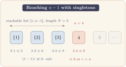
Theorem 4.1. For all m \geq 2, \ell \geq 2, and k \geq n - 1, S_m(k, \ell) \geq n - 1.
Proof. If n = 1 the conclusion reads S_m(k,\ell) \geq 0, vacuously true. Assume n \geq 2. Partition [1, n-1] into singletons D_r := \{r\} for r = 1, \ldots, n-1. By Lemma 2.3 each D_r is \ell-sum-free (since 1 \leq r < n forces n \nmid r). This is a valid (n-1)-partition; for k \geq n-1 pad with empty classes by Lemma 2.4.□
5 The threshold k_0(m,\ell)
Theorem 1.2 says that S_m(k,\ell) = n - 1 once k is large enough. But exactly how large is “large enough”? Define k_0(m, \ell) to be the least k such that S_m(k', \ell) = n - 1 for every k' \geq k. This section pins down k_0 for prime moduli exactly and shows, via a counterexample, that composite moduli can require fewer classes than the prime case suggests.
Theorem 5.1. k_0(m, \ell) \leq \max(1, n - 1).
In other words: you never need more than n - 1 classes before the formula S_m(k,\ell) = n - 1 kicks in.
Proof. Theorem 4.1 exhibits a valid (n-1)-partition achieving N = n - 1 when n \geq 2. When n = 1 the value is zero, achieved trivially at k = 1.□
Theorem 5.2 (Covering lower bound). Let \sigma(m, \ell) := \max\{|C| : C \subseteq \{1, \ldots, n-1\}, C \text{ is } \ell\text{-sum-free mod } m\}. Then k_0(m, \ell) \geq \lceil (n-1)/\sigma(m, \ell) \rceil.
In other words: \sigma(m, \ell) is the maximum number of elements that can share a single safe class. To cover all n - 1 elements, you need at least \lceil (n-1)/\sigma \rceil classes.
Proof. If [1, n-1] admits a valid k-partition, summing class sizes gives n - 1 \leq k \cdot \sigma(m, \ell).□
5.1 Tight threshold for prime modulus
For prime moduli, every non-singleton class eventually becomes unsafe once \ell is large, which forces every class to be a singleton and pins k_0 exactly at n - 1 = p - 1. The following lemma is the key tool: it describes what the set of all \ell-fold sums from a multi-element class looks like, once \ell is large relative to the size of the subgroup that class generates.
Theorem 5.3 (Large-\ell coset criterion). Let C \subseteq \mathbb{Z}/m with |C| \geq 2, pick a_0 \in C, and let H := \langle C - C \rangle = g\mathbb{Z}/m with g := m/|H|. For every \ell \geq |H| - 1, \ell C = \ell a_0 + H, and consequently C is \ell-sum-free modulo m if and only if g \nmid (\ell - 1) a_0.
In other words: once \ell is large enough (at least |H| - 1), the collection of all \ell-fold sums from C fills out the entire coset \ell a_0 + H. The class C is safe precisely when that filled coset does not overlap with C itself. Figure 8 traces the saturation for a prime modulus.
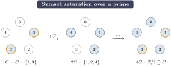
Proof of Proof sketch. The inclusion \ell C \subseteq \ell a_0 + H. Write any \ell-fold sum as c_1 + \cdots + c_\ell = \ell a_0 + \sum_{i=1}^{\ell} (c_i - a_0). Each difference c_i - a_0 lies in H = \langle C - C \rangle, so the whole sum lies in the coset \ell a_0 + H.
The reverse inclusion \ell a_0 + H \subseteq \ell C. Shift C to the origin by setting D := C - a_0. Then 0 \in D \subseteq H, and D generates H, since \langle D \rangle = \langle D - D \rangle = \langle C - C \rangle = H (the first equality uses 0 \in D). Because 0 \in D, adjoining another copy of D can only enlarge a sumset, so the iterated sumsets form a non-decreasing chain inside H, D \subseteq 2D \subseteq 3D \subseteq \cdots \subseteq H. This chain starts at |D| = |C| \geq 2 elements and is capped by |H|, so it can strictly grow at most |H| - 2 times; hence it stabilizes, tD = (t+1)D, at some step t \leq |H| - 1. A stabilized sumset satisfies tD + D = tD, so tD is closed under adding any element of D, and therefore under adding any element of the subgroup \langle D \rangle = H that D generates. Thus tD is a union of cosets of H, and since it contains 0 it must be all of H. So \ell D = H for every \ell \geq t, in particular for every \ell \geq |H| - 1, and undoing the shift gives \ell C = \ell a_0 + \ell D = \ell a_0 + H.
The safety criterion. Fix \ell \geq |H| - 1, so that \ell C = \ell a_0 + H by the two inclusions above. Since C \subseteq a_0 + H, the sumset \ell C meets C exactly when the cosets \ell a_0 + H and a_0 + H coincide, that is when (\ell - 1) a_0 \in H, equivalently g \mid (\ell - 1) a_0 (recall H = g\,\mathbb{Z}/m). Hence C is \ell-sum-free if and only if g \nmid (\ell - 1) a_0.□
Remark 5.4. The (\supseteq) direction is a cyclic-group version of the Cauchy–Davenport theorem [Cau13,Dav35]: over \mathbb{Z}/p prime, iterating |A+B| \geq \min(p, |A| + |B| - 1) yields |\ell C| \geq \min(p, \ell(|C|-1) + 1), so any non-degenerate C (|C| \geq 2) has \ell C = \mathbb{Z}/p once \ell \geq p - 1. Theorem 5.3 is the saturation statement inside an arbitrary cyclic subgroup H \leq \mathbb{Z}/m, with the explicit \ell \geq |H| - 1 threshold.
Corollary 5.5 (Sharp k_0 for prime moduli). Let p be prime. For every \ell \geq p - 1 with \ell \not\equiv 1 \pmod p, k_0(p, \ell) = p - 1.
In other words: for a prime modulus, you need exactly p - 1 classes before the formula stabilizes, and no fewer will do. The reason is that any class with two or more elements eventually becomes unsafe (its \ell-fold sums fill all of \mathbb{Z}/p), so every safe partition must consist entirely of singletons.
Proof. For any |C| \geq 2 in \mathbb{Z}/p, the subgroup \langle C - C \rangle is either 0 (ruled out) or \mathbb{Z}/p (since \mathbb{Z}/p has no nontrivial subgroups). By Theorem 5.3 with g = 1, \ell C = \mathbb{Z}/p, so C is not \ell-sum-free. Hence \sigma(p, \ell) = 1, and Theorem 5.2 gives k_0 \geq n - 1 = p - 1; Theorem 5.1 supplies the match.□
5.2 Composite moduli: a counterexample to the natural conjecture
Corollary 5.5 might suggest a general rule: for every m and every large \ell with \gcd(m, \ell - 1) < m, only singletons are \ell-sum-free, so k_0(m, \ell) = n - 1. This is false once m is composite. The composite case has more subgroup structure, and a two-element class can hide inside a proper subgroup and remain safe. The proposition below gives a concrete instance.
Proposition 5.6. For m = 12 and every \ell \equiv 11 \pmod{12} (so d = 2, n = 6), the set C = \{1, 5\} \subseteq \{1, \ldots, 5\} is \ell-sum-free modulo 12. Consequently \sigma(12, \ell) \geq 2 and k_0(12, \ell) \leq 3 < n - 1.
In other words: the pair \{1, 5\} generates differences \{0, \pm 4\}, so its differences lie in the subgroup \{0, 4, 8\} \subset \mathbb{Z}/12 (Figure 9). That subgroup is small enough that \{1, 5\} stays safe. This lets us cover [1, 5] with only three classes rather than five, showing k_0 < n - 1 here.
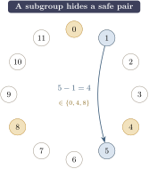
Proof. C - C = \{0, \pm 4\}, so \langle C - C \rangle = 4\mathbb{Z}/12 = \{0, 4, 8\}, |H| = 3, g = 4. Theorem 5.3 applies once \ell \geq 2. With a_0 = 1, the criterion 4 \nmid (\ell - 1) \cdot 1 reads 4 \nmid \ell - 1, i.e. \ell \not\equiv 1 \pmod 4. For \ell \equiv 11 \pmod{12} we have \ell \equiv 3 \pmod 4, so 4 \nmid \ell - 1, and C is \ell-sum-free, giving \sigma(12, \ell) \geq 2.
For the k_0 bound, consider the 3-partition [1, 5] = \{1, 4\} \sqcup \{2, 5\} \sqcup \{3\}. Each pair-class has C - C = \{0, \pm 3\}, hence H = \langle 3 \rangle = \{0, 3, 6, 9\}, |H| = 4, g = 3; Theorem 5.3 applies for \ell \geq 3 with safety criterion 3 \nmid (\ell - 1) a_0. For \ell \equiv 11 \pmod{12} we have \ell - 1 \equiv 10 \pmod{12}, and 3 \nmid 10 \cdot 1 as well as 3 \nmid 10 \cdot 2, so both \{1, 4\} (with a_0 = 1) and \{2, 5\} (with a_0 = 2) are \ell-sum-free. The singleton \{3\} is safe by Lemma 2.3: (\ell - 1) \cdot 3 \equiv 30 \equiv 6 \not\equiv 0 \pmod{12}. Hence k_0(12, \ell) \leq 3.□
6 The k = 1 case
When k = 1 there is only a single class, which must contain all of [1,N]. The whole list is one set, and it must itself be \ell-sum-free. So S_m(1,\ell) is asking: how long can a list be if we are not allowed to split it at all? The answer turns out to be the minimum of two simple quantities, each capturing one way the list can become too long.
Theorem 6.1. For every m \geq 2 and 2 \leq \ell \leq m, S_m(1, \ell) = \min\!\left(\ell - 1,\ \left\lfloor \frac{m}{\ell} \right\rfloor\right).
In other words: the single-class limit is whichever is smaller, either \ell - 1 (imposed by the element 1 appearing \ell times) or \lfloor m/\ell \rfloor (imposed by the list growing long enough that some \ell-fold sum wraps around to 1 modulo m).
This resolves [DSWH25, Problem 1, part 3].
Proof. Write N^* := \min(\ell - 1, \lfloor m/\ell \rfloor).
Upper bound S_m(1,\ell) \leq \ell - 1. For \ell = m this follows from Lemma 2.2. For \ell < m: if N \geq \ell, then 1 \in [1,N] and the \ell-fold sum \underbrace{1 + \cdots + 1}_{\ell} = \ell satisfies \ell \in [1,N] (since \ell < m, so \ell is a nonzero residue in [1,m-1], and \ell \leq N). This gives a violation.
Upper bound S_m(1,\ell) \leq \lfloor m/\ell \rfloor. Suppose N \geq \lfloor m/\ell \rfloor + 1. Write m + 1 = q\ell + r with q = \lfloor(m+1)/\ell\rfloor and r = (m+1) \bmod \ell. Then q \geq 1 (since m \geq \ell) and q \leq \lfloor m/\ell \rfloor + 1 \leq N; also q + 1 \leq \lfloor m/\ell \rfloor + 1 \leq N when r > 0. The \ell-tuple with r entries equal to q+1 and \ell - r entries equal to q consists entirely of elements in [1, N] and sums (as integers) to q\ell + r = m + 1 \equiv 1 \pmod m. Since 1 \in [1,N], this is a violation.
Lower bound S_m(1,\ell) \geq N^*. Every \ell-fold integer sum of elements from [1, N^*] lies in [\ell, \ell N^*]. Since N^* \leq \lfloor m/\ell \rfloor, we have \ell N^* \leq m, so all such sums lie in [\ell, m]. Their residues modulo m belong to \{\ell, \ldots, m-1, 0\}. But elements of [1, N^*] have residues in \{1, \ldots, N^*\} \subseteq \{1, \ldots, \ell - 1\}, which is disjoint from \{\ell, \ldots, m-1, 0\}. No violation is possible.□
Remark 6.2. The formula \min(\ell - 1, \lfloor m/\ell \rfloor) interpolates naturally between two regimes. In the no-wrap regime \ell(\ell-1) < m, one has \ell - 1 < m/\ell, so the minimum equals \ell - 1: the list is bottlenecked by the element 1 summing up to \ell, not by any wraparound (consistent with the observation in [DSWH25] for small \ell). In the wrap regime \ell(\ell-1) \geq m (D’orville’s Problem 1, part 3), the minimum is \lfloor m/\ell \rfloor: the list is bottlenecked by \ell-fold sums wrapping around modulo m; Figure 10 plots both bounds and their minimum for m = 30. The formula was empirically verified for m \in [2,30], \ell \in [2, m] (414 cases) before the proof was written.
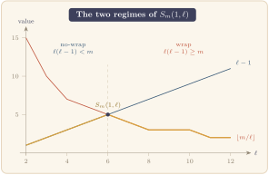
7 Corollaries: recovered and extended formulas
The main formula S_m(k,\ell) = m/\gcd(m,\ell-1) - 1 (Theorem 1.2) immediately yields explicit tables for any fixed modulus by plugging in the possible values of \gcd(m, \ell-1). We list a few cases to show how the formula recovers and extends the prior literature, then state the prime-power family.
Specializing Theorem 1.2:
- m = 8: for k \geq 7, S_8(k, \ell) equals 0, 1, 3, 7 according to \gcd(8, \ell - 1) \in \{8, 4, 2, 1\} (residue pattern \ell \bmod 8).
- m = 9: for k \geq 8, S_9(k, \ell) equals 0, 2, 8 according to \gcd(9, \ell - 1) \in \{9, 3, 1\}.
- m = 11: for k \geq 10, S_{11}(k, \ell) = 0 if \ell \equiv 1 \pmod{11}, else 10.
- Prime-power m = p^e: writing v := \min(v_p(\ell - 1), e) where v_p denotes the p-adic valuation, for k \geq p^{e-v} - 1, S_{p^e}(k, \ell) = p^{e-v} - 1.
All of these stabilized values are consistent with (and for m = 4, 5, 6, 7 recover) the tables of [DSWH25, §2–3] and for m = 1, 2, 3 the theorems of [CMD13, §1–2].
8 Structural reductions toward composite k_0(m,\ell)
For composite m, the threshold k_0(m,\ell) is not pinned by Theorem 5.1 alone: the covering bound (Theorem 5.2) matches n - 1 for primes but falls short in general. For m = 8 and \ell even, \sigma(8, \ell) = 4 (the witness set \{1, 3, 5, 7\} is \ell-sum-free), so the covering bound gives only k_0 \geq 2 while the true value is k_0 = 3. A closed form for k_0(m,\ell) at composite m remains open (Section 9), but the reductions below reduce the problem to a single well-defined existence question on a finite and structurally organized collection of cells.
8.1 The K + \tau schema
The key insight is that all pairs (m, \ell) sharing the same quotient n = m/\gcd(m, \ell-1) produce essentially the same covering problem, and that problem depends only on a normalized cell d_0 derived from \gcd(m, \ell-1).
Fix a quotient n \geq 2, write n = \prod_i p_i^{f_i}, and set \mathrm{cap}_i := \lfloor \log_{p_i}(n - 1) \rfloor. For any \ell with m/\gcd(m, \ell-1) = n, write d := \gcd(m, \ell - 1) and define the normalized cell d_0 := \prod_i p_i^{\min(v_{p_i}(d),\ \mathrm{cap}_i)}. The maximal \ell-sum-free fragments on \{1, \ldots, n-1\} \subseteq \mathbb{Z}/m depend only on d_0: prime factors of d outside the support of n are absorbed by g \mapsto g/\gcd(g, d) in the singleton criterion (Lemma 2.3), and exponents above \mathrm{cap}_i produce divisors > n - 1. Splitting any optimal cover into private fragments (those containing a witness point in no other fragment) and the residual cover yields k_0(m, \ell) = K(d_0) + \tau(d_0), where K(d_0) counts the private fragments and \tau(d_0) is the minimum number of non-private fragments needed to cover the points left over once the private (forced) fragments are removed. Each fixed-quotient family thus reduces to a finite collection of \prod_i (\mathrm{cap}_i + 1) normalized cells, and per-cell \tau is an exact (NP-hard but tractable in practice) set-cover computation on the atom graph G_{\mathrm{atom}}(d_0): its vertices are the atoms of the residual universe R(d_0) (maximal sets of points lying in exactly the same maximal residual fragments), and two atoms are adjacent when some fragment contains both.
8.2 The Coordinate-Union Edge Rule
The atom graph has hidden product structure that makes the set-cover problem more tractable. Each atom A carries a set of coordinates, one per prime g in its support pattern, that record which residue class modulo g the atom lies in. The edge rule says: two atoms are adjacent exactly when they share a coordinate.
Write the maximal residual fragments of a cell as F_1, \ldots, F_s with labels g_i \mid m and anchors r_i. For an atom A, its support pattern is P(A) := \{g_i : A \subseteq F_i\} \setminus \{1\}, and for g \in P(A) its coordinate is \rho_g(A) := r_i \bmod g for any i with g_i = g and A \subseteq F_i. The same-support fiber is X_P := \{A : P(A) = P\}.
Theorem 8.1 (Coordinate-Union Edge Rule). Let P be a nonempty support pattern. Two distinct atoms A, B \in X_P are adjacent in G_{\mathrm{atom}}[X_P] if and only if \rho_g(A) = \rho_g(B) for some g \in P. Equivalently, G_{\mathrm{atom}}[X_P] is the union over g \in P and r \in \mathbb{Z}/g of the cliques C_{g,r} := \{A \in X_P : \rho_g(A) = r\}.
In other words: adjacency in the atom graph is determined by coordinate-matching. Atoms that share a residue coordinate along any axis are adjacent; atoms that differ in every coordinate are non-adjacent. This turns the atom graph into a union of coordinate-cliques, a structured form that the next two reductions exploit (Figure 11).
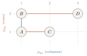
Proof. We use the maximal-fragment normal form: (NF1) each F_i = \{x \in R(d_0) : x \equiv r_i \pmod{g_i}\}; (NF2) two fragments of the same label g \neq 1 that meet on R(d_0) are equal; (NF3) distinct labels impose independent congruences. NF1 is the definition of the fragment generators and NF3 is immediate; NF2 (anchor uniqueness per label) is the anchor-uniqueness sublemma, formalized together with the fiber machinery in ‘SameSupportFiber.lean‘. In particular \rho_g is well defined, since by NF2 at most one label-g fragment contains a given atom.
If A, B \subseteq F_i for one fragment F_i, then its label is not 1 (a label-1 fragment is a singleton residual mask, which cannot contain two distinct atoms), so g_i \in P(A) = P(B) = P; by NF1 every point of A and of B is congruent to r_i modulo g_i, whence \rho_{g_i}(A) = \rho_{g_i}(B) = r_i \bmod g_i. Conversely, suppose \rho_g(A) = \rho_g(B) = r for some g \in P. Let F_i be the unique label-g fragment with A \subseteq F_i, so r_i \equiv r \pmod g. Every y \in B satisfies y \equiv \rho_g(B) = r \equiv r_i \pmod{g_i} and y \in R(d_0), so y \in F_i by NF1; hence B \subseteq F_i and A, B share a fragment. Both directions use only that every point of an atom carries the atom’s \rho_g-coordinate, so the argument holds verbatim for atoms of any size.□
The edge rule turns each per-cell cover problem into set cover by the
coordinate-cliques C_{g,r}, a
structured instance on which the next two reductions act. It is
formalized in CoordinateUnion.lean and
SameSupportFiber.lean.
8.3 Exact duality and whole-axis projection-injectivity
To certify the exact value of \tau for a given cell, we need to show that a particular covering is not just valid but minimum. The following duality proposition does that: a cover and a packing (independent set) of equal size pin \tau between them, since from the top, the cover can drop no further and from below the packing can rise no higher.
Proposition 8.2 (Cover–packing exact duality). If a cell admits a residue-axis cover of G_{\mathrm{atom}}[X_P] and an independent set (packing) of the same cardinality, then that cover is minimum: \mathrm{axis\_cover}(X_P) = \mathrm{maxPacking}(X_P).
This is the engine behind every certified cell below (formalized in
ResidueAxis.lean): it reduces “compute \tau” to “exhibit a matching cover/packing
pair,” and it yields a clean structural sufficient condition.
Definition 8.3. A fiber X_P is whole-axis projection-injective (WAP) if \rho_g is injective on X_P for some g \in P; such an X_P is a whole-axis projection-injective fiber.
In other words: a fiber is WAP when its atoms all have distinct coordinates along some single axis g. The coordinate-cliques along that axis are then singletons, but that alone does not certify the cover number: a cover may draw cliques from every axis of P, and two atoms that differ on g can still share a coordinate on another axis. Call a fiber when \rho_g is injective on X_P for every g \in P; by the edge rule this says exactly that G_{\mathrm{atom}}[X_P] has no edges (Figure 12).
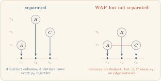
Theorem 8.4 (Separated-fiber sufficiency). If X_P is separated, then for any g \in P the singleton coordinate-cliques along g form a cover and the whole fiber is a packing, so \mathrm{axis\_cover}(X_P) = |X_P| is exact. Moreover every |P| = 1 fiber is separated.
Both parts are proved per cell (the |P| =
1 case routed through NF2) and formalized in
WholeAxisPID.lean. An earlier version of this theorem drew
the same conclusion from WAP alone. That is false for |P| \geq 2: two atoms can differ on the
injective axis and still share a coordinate on another axis of P, so the fiber need not be a packing. The
failure is not rare. At n = 220, d_0 = 110, P = (8,
25) the fiber has 12 atoms with
\rho_{25} injective, yet all 12 share their \rho_8 coordinate, so a single 8-axis clique covers everything and the true
cover number is 1, not 12. Computationally, separation holds for
100\% of |P|
= 1 fibers and for 74.1\%, 60.2\%,
61.3\% of all fibers at the levels n =
220, 440, 880 of the dyadic family n =
55 \cdot 2^a; WAP alone, which certifies only the single-axis
subfamily, holds for 93.8\%, 89.5\%,
89.1\%. The non-separated fibers are the cases in which the
cover–packing gap (the deficit) can appear: separation does not
eliminate the obstruction, it locates the cells in which the obstruction
can live.
For those cells, where no axis sorts the atoms one per bucket, the duality engine still mops up, through a weaker witness.
Proposition 8.5 (AET exactness). An anchored exact transversal (AET) of X_P is a family of coordinate-cliques covering X_P together with a system of distinct representatives that is independent in G_{\mathrm{atom}}[X_P]. If X_P admits an AET, then \mathrm{axis\_cover}(X_P) = \mathrm{maxPacking}(X_P).
In other words: an AET is a cover-and-packing witness that does not
require the atoms to be pairwise separated on every axis, but instead
allows different parts of the fiber to be handled by different axes,
provided the chosen representatives are independent. A separated fiber
admits the trivial single-axis AET, in which every clique of the cover
is a singleton and the fiber represents itself; a fiber that is merely
WAP does not, since its atoms need not be independent. The proposition
is formalized in AnchoredExactTransversal.lean. Whether
every non-separated fiber admits an AET is the residual obstruction
taken up in Section 9.
8.4 Computational frontier and verification basis
Using the schema and the duality engine, every remaining pair (m,\ell) with m
\leq 5500 has been certified to an explicit value of k_0: fixed-quotient family closures for n \leq 345, plus direct single-pair
certificates for the six remaining pairs 5184
\leq m \leq 5472. Every per-cell fact is machine-checked in Lean
by native_decide, which carries the same trust profile as
bv_decide, the Lean community’s standard verified-SAT
tactic: on the toolchain used (leanprover/lean4:v4.28.0)
both reduce to the identical axioms Lean.ofReduceBool and
Lean.trustCompiler. The Lean kernel verifies the entire
proof apart from the evaluation of the compiled decision procedure,
which it delegates to the Lean compiler and the CPU running it; that
delegation is sound provided no project-level compiler redirection
(@[extern], @[implemented_by],
unsafe) shadows a verified definition in the evaluated
closure, of which the development has none (the only externs it reaches
are the Lean-core and Mathlib primitives that bv_decide’s
own checker also relies on). Beyond the kernel itself, the certification
therefore trusts only the Lean compiler and the local CPU: no external
solver output, network service, or manual step takes part.
Remark 8.6. An earlier approach bounded \tau(d_0) by a nice-tree-decomposition DP on G_{\mathrm{atom}}(d_0) with a three-term frontier-bag bound. On the n = 220 family (d = 110t, cap profile (\mathrm{cap}_2, \mathrm{cap}_5, \mathrm{cap}_{11}) = (7, 3, 2), a collection of 96 cells) an exhaustive scan gives a maximum treewidth \max_{d_0} \mathrm{tw}(G_{\mathrm{atom}}(d_0)) = 15, attained at d_0 = 440 and matching the bag-size bound 16. The bound is n-specific, however: the treewidth already exceeds 15 at n = 440 (the same prime support \{2,5,11\}), so the tree-decomposition route does not give a uniform DP across quotients. The Coordinate-Union Edge Rule and the cover/packing duality above superseded it as the per-cell tool.
9 The remaining open frontier
The paper closes three questions from the prior literature and opens several new ones. This section states clearly what the current techniques do not yet resolve.
- AET existence and a closed form for \tau(d_0). The reductions of Section 8 reduce the composite-m threshold problem to a single obstruction: does every non-separated fiber admit an anchored exact transversal (Proposition 8.5)? The answer is no, and not only for other moduli: beyond the 27 = 3^3 coordinate axis that produces AET-failing fibers at n \in \{330, 660\} (cover 14, packing 13), a certified failure exists on the dyadic family itself, at n = 880, d_0 = 35200, P = (121, 125, 256), with packing 48 and cover 50. Empirically the failures are isolated: an AET exists on every other dyadic fiber tested, which covers around 30 WAP-failing fibers, including difficult cases with large prime-power components (11^2 and 5^3; 5^4 and 11^3), for n up to 14080, and all 75 fibers at n \in \{220, 440\} that are WAP but not separated, where the exact minimum cover equals the exact maximum packing throughout. No proof covers the passing region: the two-axis case is conditional on a König/parallel-edge argument and the three-axis case has no structural argument at all. A closed form for \tau(d_0) therefore cannot lean on AET alone; it must either characterize where AET fails or bound the cover–packing deficit there directly. The deficit across four dyadic levels grew 5 \to 7 \to 11 \to 14 with no convergent trajectory, and every simple scalar predictor of \tau (dyadic level, support exponent, maximal class size, class counts, projection size) has been ruled out by the data, leaving the shape of the covering certificate as the only surviving predictor. A uniform closed form for \tau(d_0) at composite m thus remains conjectural.
- Boundary 1 < k < n - 1. Theorem 1.2 governs the “many classes” regime k \geq n - 1, and Theorem 6.1 settles the single-class case k = 1. The intermediate regime 1 < k < n - 1, where classes must be simultaneously large and \ell-sum-free, is empirically eventually periodic in \ell \bmod m for fixed k (verified through m \leq 13), but there is no formula.
- Optimizing over \ell. For fixed k and m \to \infty, what is \max_\ell S_m(k, \ell)? The pointwise value is Theorem 1.2; taking the maximum over \ell turns the question into a divisor-counting problem on m.
10 References
- [ABB+25]
T. Achim, A. Best, A. Bietti, K. Der, M. Fédérico, S. Gukov, D. Halpern-Leistner, K. Henningsgard, Y. Kudryashov, A. Meiburg, M. Michelsen, R. Patterson, E. Rodriguez, L. Scharff, V. Shanker, V. Sicca, H. Sowrirajan, A. Swope, M. Tamas, V. Tenev, J. Thomm, H. Williams, and L. Wu, Aristotle: IMO-level Automated Theorem Proving, 2025. arXiv:2510.01346.
- [BB82]
A. Beutelspacher and W. Brestovansky, Generalized Schur numbers, in Combinatorial Theory (Schloß Rauischholzhausen, 1982), Lecture Notes in Mathematics 969, Springer, 1982, pp. 30–38.
- [Cau13]
A. L. Cauchy, Recherches sur les nombres, J. École Polytech. 9 (1813), 99–116.
- [CMD13]
J. Chappelon, M. P. Revuelta Marchena, and M. I. Sanz Domínguez, Modular Schur numbers, Electron. J. Combin. 20(2) (2013), #P61. arXiv:1306.5635.
- [Dav35]
H. Davenport, On the addition of residue classes, J. London Math. Soc. 10 (1935), 30–32.
- [DSWH25]
J. D’orville, K. A. Sim, K. B. Wong, and C. K. Ho, Modular generalizations of Schur numbers, Integers 25 (2025), #A62.
- [Heu17]
M. J. H. Heule, Schur number five, Proceedings of AAAI 2018, 6598–6606. arXiv:1711.08076.
- [LR14]
B. M. Landman and A. Robertson, Ramsey Theory on the Integers, 2nd ed., Student Mathematical Library 73, American Mathematical Society, 2014.